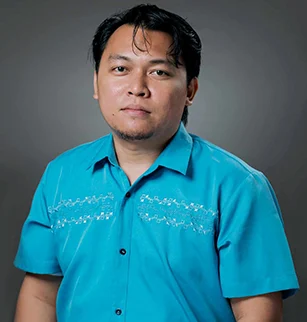
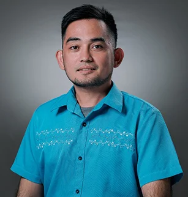
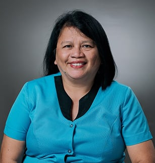

Mission
As such, it commits itself to:
Prepare graduate students to be competent, socially responsible individuals and skilled professionals in the field of Computing and Information Sciences.
Maintain the quality and excellence in research development.
Foster an academic environment with engineered innovative development and up-to-date. technology-based trends in enhancing a high degree of professionalism and excellence of the future graduates.
Objectives
To be a leading Center of Computing and Information Sciences.
To review and update academic programs and to upgrade facilities and equipment regularly.
To conduct seminars, symposia, field trips and the like as other warranted avenues for new and additional learning and/or knowledge.
To establish and maintain linkages with other institutions and/or agencies here and abroad for the OJT of future graduates, and for the mutual exchange of resources and/or benefits.
To standardize the learning instructions and/or strategies.
To ensure the integral growth of the students by integrating in the curriculum or academic programs the Christian teachings and spiritual or personal norms and practices.
FACULTY

Daisa O. Gupit

Marlon Juhn M. Timogan

Arvin Kenneth O. monton
Jessie S. Mahinay
John Mark B. Clemen

Ronnel A. Falo

Berfil E. Olmedo
Course Offering
- Bachelor of Science in Computer Science
- Bachelor of Science in Information Technology
- Bachelor of Library and Information Science
- Diploma in Information Technology
Contact US